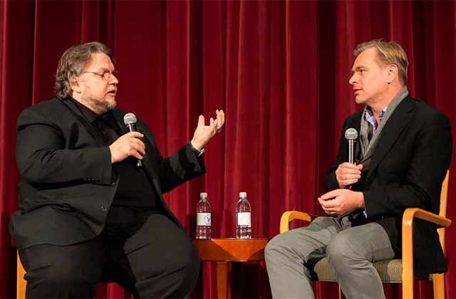

"Nueva colaboración entre aclamados directores en un proyecto cinematográfico sin precedentes"
"Nueva colaboración entre aclamados directores en un proyecto cinematográfico sin precedentes" 
En un emocionante giro para la industria del cine, los renombrados directores Christopher Nolan y Guillermo del Toro han anunciado una colaboración épica en una película que promete llevar a los espectadores a territorios inexplorados.
El proyecto, aún sin título, reunirá el estilo visual distintivo de Nolan, conocido por sus intrincadas tramas y efectos visuales impresionantes, con la visión única y surrealista de Del Toro, maestro en la creación de mundos fantásticos y personajes memorables.
Ambos directores, ganadores del premio Óscar, han expresado su entusiasmo por trabajar juntos y desafiar los límites de la narrativa cinematográfica. El proyecto se mantiene en secreto, con detalles escasos sobre la trama, pero se espera que sea un viaje cinematográfico que marque un hito en la historia del cine.
Los fanáticos y la industria están ansiosos por descubrir cómo se fusionarán las distintivas habilidades de Nolan y Del Toro en este ambicioso proyecto. Con dos visionarios del cine al timón, las expectativas están por las nubes, y el anuncio ya ha generado una enorme anticipación en redes sociales y entre los amantes del séptimo arte. La fecha de estreno y más detalles sobre la película se revelarán en los próximos meses, manteniendo la intriga y la emoción en aumento. Este proyecto conjunto promete no solo ser una colaboración única, sino también un evento cinematográfico que marcará una nueva era en la industria del cine.